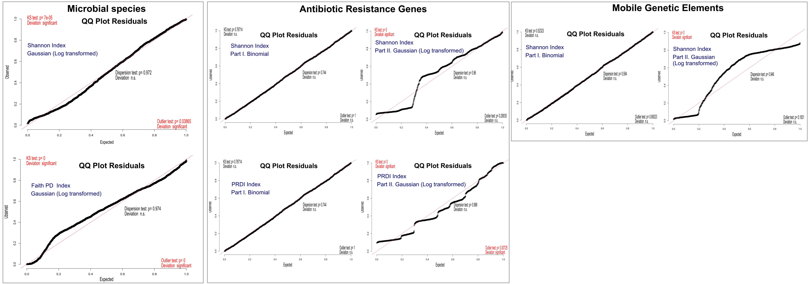

Significance codes:
*** p < 0.001, ** p < 0.01, * p < 0.05, . p < 0.1
Report 4
Report 6: Univariate Log-transformed Gaussian mixed-effects models of species α-diversity across pregnancy outcome groups (A-D).
Model estimates
Family: gaussian
Formula: diversity_metric ~ pregnancy outcome group (A-D) + (1 | patient)
Data: Shannon by pregnancy outcome groups (A-D)
Number of observations: 1957; groups: PATIENT, 1547
Dispersion estimate for gaussian family (sigma^2): 0.138
| Variable | Estimate | Std. Error | z value | p-value |
|---|---|---|---|---|
| Intercept | 0.825 | 0.020 | 41.25 | < 2e-16 (***) |
| Group B | -0.034 | 0.032 | -1.07 | 0.286 |
| Group C | 0.007 | 0.030 | 0.24 | 0.809 |
| Group D | 0.181 | 0.030 | 6.01 | 1.86e-09 (***) |
Confidence level: 0.95
p-value adjustment: Tukey method for comparing a family of 4 estimates
| Contrast | Estimate | SE | t value | p-value |
|---|---|---|---|---|
| A vs B | 0.034 | 0.032 | 1.07 | 0.710 |
| A vs C | -0.007 | 0.030 | -0.24 | 0.995 |
| A vs D | -0.181 | 0.030 | -6.01 | < 0.0001 (***) |
| B vs C | -0.041 | 0.034 | -1.23 | 0.610 |
| B vs D | -0.215 | 0.034 | -6.40 | < 0.0001 (***) |
| C vs D | -0.173 | 0.032 | -5.43 | < 0.0001 (***) |
Data: Phylogenetic Diversity (PD) by pregnancy outcome groups (A-D)
Family: gaussian
Number of observations: 1957; groups: PATIENT, 1547
Dispersion estimate for gaussian family (sigma^2): 0.178
| Variable | Estimate | Std. Error | z value | p-value |
|---|---|---|---|---|
| Intercept | 3.575 | 0.022 | 162.58 | < 2e-16 (***) |
| Group B | 0.045 | 0.035 | 1.28 | 0.200 |
| Group C | 0.145 | 0.033 | 4.36 | 1.31e-05 (***) |
| Group D | 0.221 | 0.033 | 6.68 | 2.35e-11 (***) |
Confidence level: 0.95
p-value adjustment: Tukey method for comparing a family of 4 estimates
| Contrast | Estimate | SE | t value | p-value |
|---|---|---|---|---|
| A vs B | -0.045 | 0.035 | -1.28 | 0.575 |
| A vs C | -0.145 | 0.033 | -4.36 | 0.0001 (***) |
| A vs D | -0.221 | 0.033 | -6.68 | < 0.0001 (***) |
| B vs C | -0.100 | 0.037 | -2.72 | 0.0337 (*) |
| B vs D | -0.176 | 0.037 | -4.79 | < 0.0001 (***) |
| C vs D | -0.076 | 0.035 | -2.17 | 0.133 |
Report 5
Report 7: Univariate Hurdle mixed-effects models (binomial and log-transformed Gaussian) assessing ARGs and MGEs detection and diversity across pregnancy outcome groups (A-D).
-
Model estimates
Formula: diversity_metric ~ outcome_group + (1 | patient)
Antibiotic Resistance Genes (ARG)
Data: Shannon by pregnancy outcome groups (A-D)
Part I. Family: binomial
Number of observations: 1947, groups: PATIENT, 1547
| Variable | Estimate | Std. Error | z value | p-value |
|---|---|---|---|---|
| (Intercept) | 0.094 | 0.100 | 0.94 | 0.346 |
| Group B | 0.038 | 0.161 | 0.24 | 0.811 |
| Group C | 0.545 | 0.154 | 3.54 | 0.000405 (***) |
| Group D | 0.255 | 0.150 | 1.70 | 0.089 (.) |
Confidence level: 0.95
p-value adjustment: Tukey method for comparing a family of 4 estimates.
| Contrast | Odds ratio | SE | z value | p-value |
|---|---|---|---|---|
| A vs B | 0.962 | 0.155 | -0.239 | 0.995 |
| A vs C | 0.580 | 0.089 | -3.537 | 0.0023 (**) |
| A vs D | 0.775 | 0.116 | -1.701 | 0.323 |
| B vs C | 0.603 | 0.104 | -2.939 | 0.0173 (*) |
| B vs D | 0.805 | 0.136 | -1.284 | 0.573 |
| C vs D | 1.336 | 0.215 | 1.801 | 0.273 |
Part II. Family: gaussian
Number of observations: 1097, groups: PATIENT, 928
Dispersion estimate for gaussian family (sigma^2): 0.117
| Variable | Estimate | Std. Error | z value | p-value |
|---|---|---|---|---|
| (Intercept) | 0.560 | 0.028 | 19.86 | < 2e-16 (***) |
| Group B | 0.098 | 0.045 | 2.20 | 0.028 (*) |
| Group C | 0.112 | 0.040 | 2.78 | 0.0055 (**) |
| Group D | 0.130 | 0.041 | 3.18 | 0.0015 (**) |
Confidence level: 0.95
p-value adjustment: Tukey method for comparing a family of 4 estimates.
| Contrast | Estimate | SE | t value | p-value |
|---|---|---|---|---|
| A vs B | -0.098 | 0.045 | -2.20 | 0.125 |
| A vs C | -0.112 | 0.041 | -2.78 | 0.0286 (*) |
| A vs D | -0.130 | 0.041 | -3.18 | 0.0082 (**) |
| B vs C | -0.014 | 0.045 | -0.31 | 0.990 |
| B vs D | -0.032 | 0.046 | -0.70 | 0.898 |
| C vs D | -0.018 | 0.042 | -0.43 | 0.973 |
Data: Phenotypic Resistance Diversity Index (PRDI) by pregnancy outcome groups (A-D)
Part I. Family: binomial
Number of observations: 1947, groups: PATIENT, 1547
| Variable | Estimate | Std. Error | z value | p-value |
|---|---|---|---|---|
| (Intercept) | 0.094 | 0.100 | 0.94 | 0.346 |
| Group B | 0.038 | 0.161 | 0.24 | 0.811 |
| Group C | 0.545 | 0.154 | 3.54 | 0.00041 (***) |
| Group D | 0.255 | 0.150 | 1.70 | 0.089 (.) |
Confidence level: 0.95
p-value adjustment: Tukey method for comparing a family of 4 estimates.
| Contrast | Odds ratio | SE | z value | p-value |
|---|---|---|---|---|
| A vs B | 0.962 | 0.155 | -0.24 | 0.995 |
| A vs C | 0.580 | 0.089 | -3.54 | 0.0023 (**) |
| A vs D | 0.775 | 0.116 | -1.70 | 0.323 |
| B vs C | 0.603 | 0.104 | -2.94 | 0.017 (*) |
| B vs D | 0.805 | 0.136 | -1.28 | 0.573 |
| C vs D | 1.336 | 0.215 | 1.80 | 0.273 |
Part II. Family: gaussian
Number of observations: 1097, groups: PATIENT, 928
Dispersion estimate for gaussian family (sigma^2): 0.166
| Variable | Estimate | Std. Error | z value | p-value |
|---|---|---|---|---|
| (Intercept) | 1.130 | 0.029 | 38.33 | < 2e-16 (***) |
| Group B | 0.135 | 0.047 | 2.86 | 0.0042 (**) |
| Group C | 0.165 | 0.042 | 3.91 | 9.29e-05 (***) |
| Group D | 0.157 | 0.043 | 3.67 | 0.00024 (***) |
Confidence level: 0.95
p-value adjustment: Tukey method for comparing a family of 4 estimates.
| Contrast | Estimate | SE | t value | p-value |
|---|---|---|---|---|
| A vs B | -0.135 | 0.047 | -2.86 | 0.022 (*) |
| A vs C | -0.165 | 0.042 | -3.91 | 0.0006 (***) |
| A vs D | -0.157 | 0.043 | -3.67 | 0.0014 (**) |
| B vs C | -0.031 | 0.047 | -0.64 | 0.918 |
| B vs D | -0.023 | 0.048 | -0.48 | 0.964 |
| C vs D | 0.008 | 0.043 | 0.18 | 0.998 |
Mobile Genetic Element (MGE)
Data: Shannon by pregnancy outcome groups (A-D)
Part I. Family: binomial
Number of observations: 1947, groups: PATIENT, 1547
| Variable | Estimate | Std. Error | z value | p-value | Significance |
|---|---|---|---|---|---|
| (Intercept) | 0.203 | 0.104 | 1.95 | 0.051 (.) | · |
| Group B | -0.128 | 0.167 | -0.77 | 0.444 | |
| Group C | 0.437 | 0.160 | 2.74 | 0.0062 (**) | ** |
| Group D | 0.513 | 0.160 | 3.21 | 0.00135 (**) | ** |
Confidence level: 0.95
p-value adjustment: Tukey method for comparing a family of 4 estimates.
| Contrast | Odds ratio | SE | z value | p-value |
|---|---|---|---|---|
| A vs B | 1.136 | 0.190 | 0.77 | 0.8698 |
| A vs C | 0.646 | 0.103 | -2.74 | 0.0316 (*) |
| A vs D | 0.599 | 0.0958 | -3.21 | 0.0074 (**) |
| B vs C | 0.569 | 0.102 | -3.14 | 0.0091 (**) |
| B vs D | 0.527 | 0.0949 | -3.56 | 0.0021 (**) |
| C vs D | 0.927 | 0.156 | -0.45 | 0.969 |
Part II. Family: gaussian
Number of observations:1133, groups: PATIENT, 959
Dispersion estimate for gaussian family (sigma^2): 0.166
| Variable | Estimate | Std. Error | z value | p-value |
|---|---|---|---|---|
| (Intercept) | 1.031 | 0.035 | 29.21 | < 2e-16 (***) |
| Group B | 0.0457 | 0.0570 | 0.80 | 0.423 |
| Group C | 0.119 | 0.0514 | 2.32 | 0.020 (*) |
| Group D | -0.0728 | 0.0506 | -1.44 | 0.150 |
Confidence level: 0.95
p-value adjustment: Tukey method for comparing a family of 4 estimates.
| Contrast | Estimate | SE | t value | p-value |
|---|---|---|---|---|
| A vs B | -0.0457 | 0.0570 | -0.80 | 0.854 |
| A vs C | -0.1193 | 0.0514 | -2.32 | 0.094 |
| A vs D | 0.0728 | 0.0506 | 1.44 | 0.475 |
| B vs C | -0.0736 | 0.0584 | -1.26 | 0.589 |
| B vs D | 0.1185 | 0.0576 | 2.06 | 0.168 |
| C vs D | 0.1921 | 0.0521 | 3.69 |
|
GLMMs Diagnostics
Model Diagnostic
